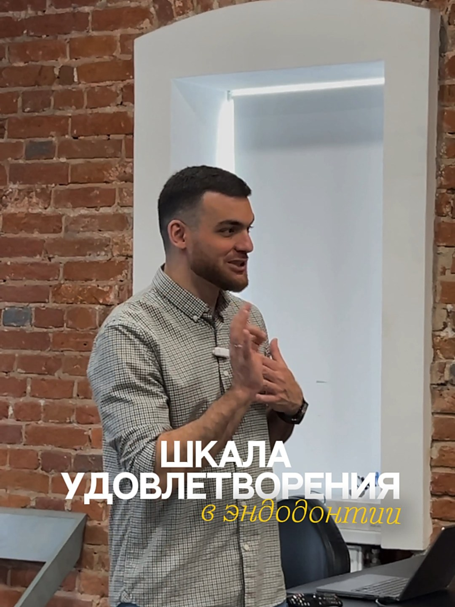
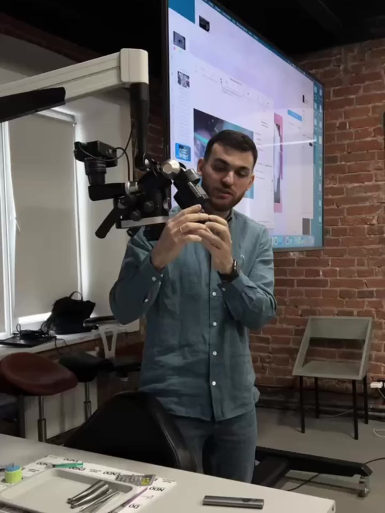

Бэкстейдж
Закулисье съёмок — то, что остаётся за кадром.

Backstage с фотосессии
Для блогера-предпринимателя

Хирургическая операция
В клинике Iceberg

Приём хирурга

Stories для клиники

Reels для стоматологии
Под трендовый звук

Детский приём
Приёмы с детьми в стоматологии

Обучение врачей

Диагностика сустава

Осмотр стоматолога

Бэкстейдж
Нескучные финансы
Бизнес-мероприятие

Бэкстейдж
Город профессий, Влад А4

Бэкстейдж с курса эндодонтии
Юрий Кочаров

Бэкстейдж с курса стоматологов

Курс для стоматологов
Гнатолог Абросимов А.М.

Стоматологическая клиника
Бэкстейдж съёмки